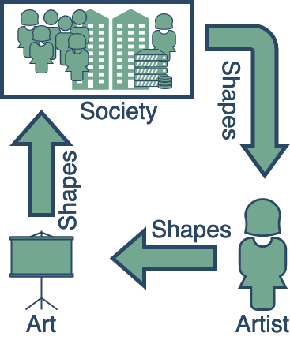
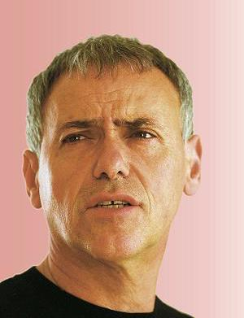

Art Evolves Life - A Sound-Driven Game of Life
Timotheus Kampik
Umeå University

- Pursuing PhD at Umeå University, Sweden
- Scientist in Residence (Product), Signavio (software start-up, latest valuation 400m€)
- Focus: automated reasoning, engineering intelligent systems
- Amateur musician
Conway's Game of Life

- Grid of tiles
- Each tile represents "agent"
- Simple rules and neighbor activity decide: is agent off or on?
- Initially: random state
- Fascinating patterns can emerge, based on initial state
Societal "Rules" Evolve

- Friedrich Nietzsche. Menschliches, Allzu Menschliches.
The Interactive Game of Life as a Metaphor (Art)
The Interactive Game of Life as a Metaphor (AI)

Formal Models as Cultural Artifacts
- Ariel Rubinstein. Opinion Piece, FAZ, 2013.